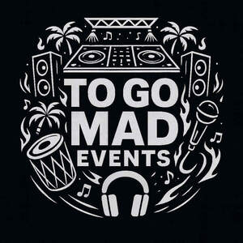

Trade Mark Journal No.2025/033 15 August 2025
UK00004233693 14 July 2025 (9,35,41)

- Class 9
- Digital media streaming devices; Media content; Computer application software for streaming audio-visual media content via the internet; Media streaming software; Digital recording media; Digital storage media; Devices for streaming media content over local wireless networks; Digital data recording media; DMB (Digital Multimedia Broadcasting) televisions; Digital music downloadable from the Internet; Digital audio servers; Digital video servers; Digital music [downloadable] provided from mp3 web sites on the internet; Digital music downloadable provided from MP3 internet web sites; Downloadable digital music provided from MP3 Internet web sites; Blank digital storage media; Blank digital recording media; Digital music downloadable provided from MP3 internet websites; Web content management [WCM] software; Covers for digital media players; Downloadable digital music; Digital video discs; Digital video players; Digital music downloadable provided from the internet; Computer software for the display of digital media; Digital books downloadable from the Internet; Downloadable educational media; Electronic storage media; Digital audio players; Audio digital discs; Cases for digital media players; Digital video discs [DVDs]; Media software; Video streaming devices; Wireless communication devices for the transmission of multimedia content; Digital audio tapes; Audio digital tapes; Digital video recorders; Digital audio interface apparatus; Digital video cameras; Digital music downloadable provided from a computer database or the internet; Software for embedding online advertising on websites; Electronic data storage media; Electronic publications recorded on computer media; Optical recording media; Digital audio recorders; Digital audio tape players; Digital video disc players; Digital music players; Optical data recording media; Apparatus for downloading audio, video and data from the internet; Media and publishing software; Downloadable digital assets; Downloadable digital photos; Digital recordings.
- Class 35
- Design of advertising logos; Advertising services to create corporate and brand identity; Advertising, marketing and promotional services; Advertising, promotional and marketing services; Marketing, advertising, and promotional services; Advertising and marketing; Advertising, marketing and promotion services; Marketing, advertising and promotion services; Brand creation services (advertising and promotion); Advertising and marketing consultancy; Promotion of goods and services through sponsorship of sports events; Advertising and marketing services; Consultancy services relating to advertising, publicity and marketing; Promotion [advertising] of business; Advertising and publicity services; Advertising and publicity; Publicity and advertising; Promotional marketing; Advertising copywriting; Advertising services to create brand identity for others; Copywriting for advertising and promotional purposes; Advertising and promotional services; Promotional and advertising services; Promotional advertising services; Promotion [advertising] of concerts; Advertising; Developing promotional campaigns for business; Promotion of goods and services through sponsorship; Marketing; Advertising and promotion services; Distribution of advertising, marketing and promotional material; Dissemination of advertising, marketing and publicity materials; Advertising, marketing and promotional consultancy, advisory and assistance services; Sponsorship search consultancy services; Design of advertising flyers; Advertising, promotional and public relations services; Developing promotional campaigns for businesses; Design of advertising brochures; Influencer marketing; Promotion, advertising and marketing of on-line websites; Event marketing; Consultancy relating to the organisation of promotional campaigns for business; Sponsorship search; Promotional marketing services using audiovisual media; Marketing services relating to esports events; On-line advertising and marketing services; Brand positioning services; Organisation of exhibitions and events for commercial or advertising purposes; Arranging advertising and promotional contracts for others; Brand strategy services; Graphic advertising services; Publicity and promotional services; Customer loyalty services for commercial, promotional and/or advertising purposes; Organization of events, exhibitions, fairs and shows for commercial, promotional and advertising purposes; Organisation of events for commercial and advertising purposes; Promotional management for sports personalities; Promotion [advertising] of travel; Preparation of advertising campaigns; Advertising and marketing services provided by means of social media; Development of promotional campaigns; Advertising and marketing services provided via communications channels; Promotional management of celebrities; Organization of exhibitions for commercial or advertising purposes; Advertising services to promote the sale of beverages; Consultancy relating to business advertising; Advertising and promotion services and related consulting; Advertising services; Consultancy relating to advertising and promotion services; Marketing consultancy; Research services relating to advertising and marketing; Customer club services, for commercial, promotional and/or advertising purposes; Business marketing consultancy; Marketing services; Business marketing services; Organization of fairs and exhibitions for commercial and advertising purposes; Organisation of exhibitions for commercial and advertising purposes; Organisation of exhibitions for commercial or advertising purposes; Business consultancy services relating to the promotion of fund raising campaigns; Press advertising consultancy; Product marketing; Distribution of advertising brochures; Advertising and advertisement services; Banner advertising; Consultancy regarding advertising communication strategies; Marketing consulting; Advertising and marketing services provided by means of blogging; Organization of fairs for commercial and advertising purposes; Corporate identity services; Press advertising services; Development of advertising concepts; Business marketing consulting services; Marketing agency services; Advertising agencies; Advertising flyer distribution for others; Advertising agency services; Organizing exhibitions for commercial or advertising purposes; Organization of exhibitions and trade fairs for commercial or advertising purposes.
- Class 41
- Entertainment services; Online entertainment services; Entertainment club services; Club entertainment services; Club services [entertainment]; Corporate entertainment services; Entertainment booking services; Nightclub services [entertainment]; Music entertainment services; Interactive entertainment services; Musical entertainment services; Video entertainment services; Television entertainment services; Night club services [entertainment]; Audio entertainment services; Entertainment services provided at nightclubs; Musical group entertainment services; Entertainment services provided at discotheques; Organisation of entertainment services; Social club services for entertainment purposes; Live entertainment services; Entertainment agency services; Provision of club entertainment services; Entertainment services provided by a music group; Entertainer services; Entertainment services provided by a musical group; Entertainment services provided by hotels; Entertainment services provided by television; Entertainment services in the nature of arranging social entertainment events; Entertainment services provided by vocalists; Entertainment ticket agency services; Jazz music entertainment services; Entertainment services in the nature of organizing social entertainment events; Entertainment services performed by a musical group; Entertainment; Karaoke services; Entertainment services performed by singers; Entertainment services provided by a musical vocal group; Entertainment services provided by performing artists; Entertainment services in the form of musical group performances; Entertainment services in the form of concert performances.
TO GO MAD EVENTS